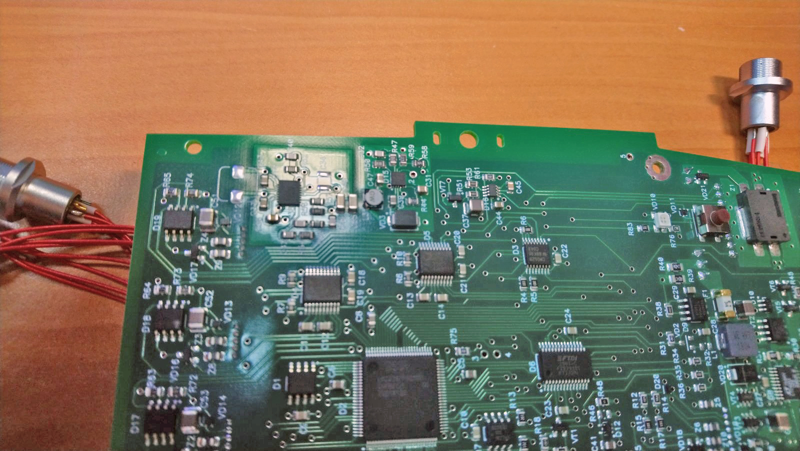
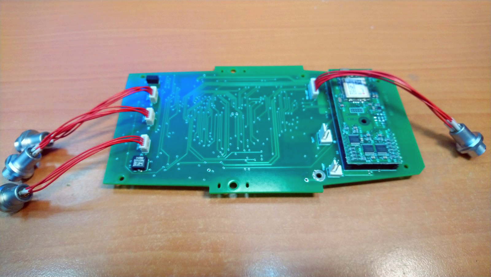
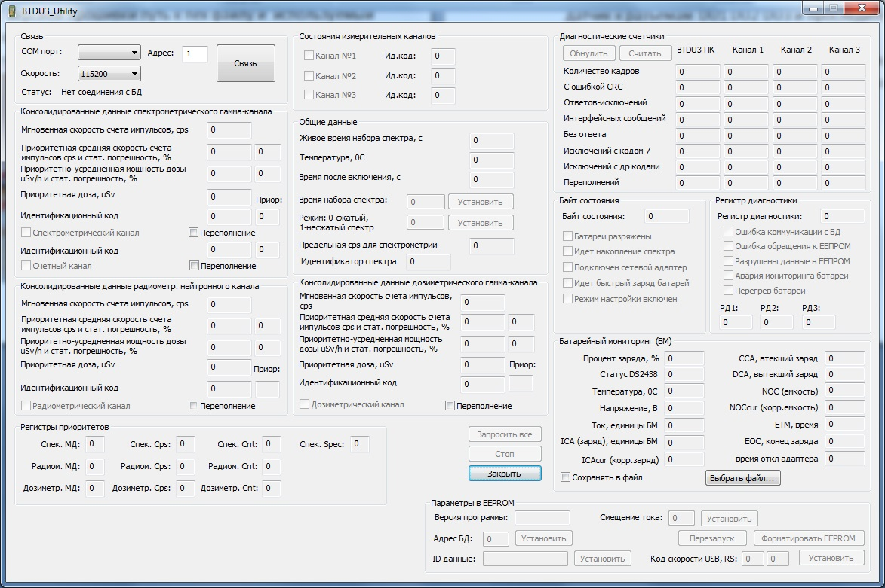

↑
Настройка BT-DU3
- 1. После получения плат проверить качество пайки стабилизаторов питания 3.3 В(D15) и 6 В(D14).

- 2. Запрограммируйте платы: Подключите АКБ к разъёму X2 с подсоединённым амперметром в разрыв питания.
Нажмите кнопку включение, потребление платы должно быть приблизительно 30-40 мА. Укажите в bat файле
ProgCom1 в папке с версией прошивки путь к hex файлу и используемый порт. Подсоедините COM кабель к разъёму
X8 и запустите bat файл ProgCom1

- 3. По завершению программирования отсоедините АКБ.
- 4. Подсоедините АКБ. Нажмите кнопку включения, проследите за включением индикации(работа светодиодов).
Проконтролируйте потребление прибора без подключённых кабелей обмена с ПК, оно должно быть 50-65 мА.
- 5. Подключите плату кабелем USB к разъёму X8.
- 6. Запустите программу BTDU – Utility. Подключите плату через созданный виртуальный Com порт. Установите
смещение по току для правильного анализирования потребления (1 единица – 10мА), для этого в поле “Смещение
тока” укажите поправку в соответствии с показаниями амперметра и поля “Ток, единицы БМ”, нажмите –
“установить”.
- 7. Введите в поле “ID данные” номер платы (2-ой байт), нажмите “Установить”. Перезапустите плату (Кнопка
“Перезапустить”).
- 8. Подключите зарядку к разъёму X1, проконтролируйте потребление, оно должно быть приблизительно 2100 мА.
Отключите зарядное устройство.
- 9. Подключите заново плату к программе BTDU - Utility. Проконтролируйте подключение датчиков – запустите
мониторинг нажав кнопку “Старт”, подключайте поочерёдно датчик к разъёмам DU1 DU2 DU3 и проследите за
подключение и передачей данных.

- 10. Проверьте работу Bluetooth модуля – отключите кабель обмена с ПК и при помощи устройства с Bluetooth
установите связь с прибором.